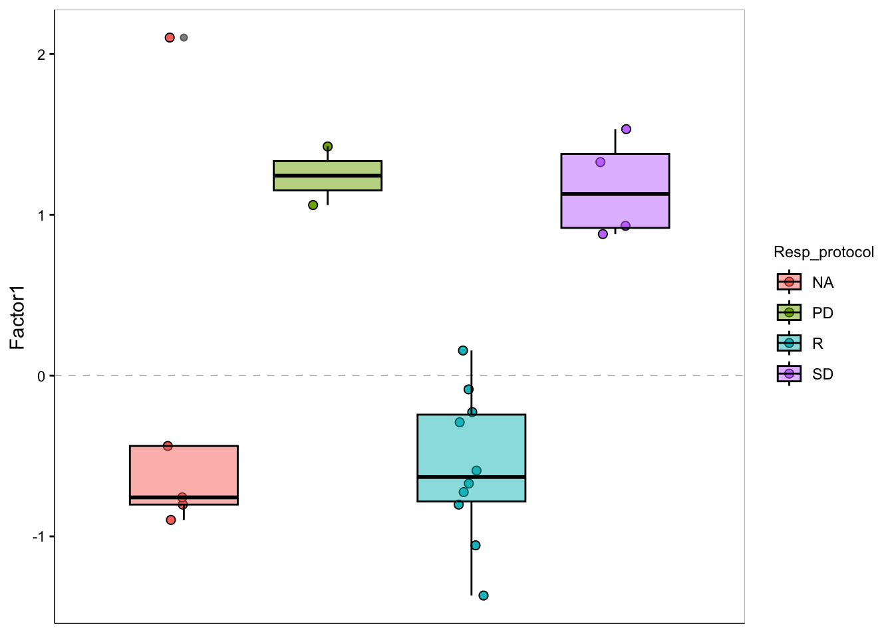

Integrative analysis using MOFA for SmartTrail dataset (only AML sample and semi-supervised)
Junyan Lu
Last updated: 2024-04-09
Checks: 5 1
Knit directory: SMARTrial/analysis/
This reproducible R Markdown analysis was created with workflowr (version 1.7.0). The Checks tab describes the reproducibility checks that were applied when the results were created. The Past versions tab lists the development history.
Great job! The global environment was empty. Objects defined in the global environment can affect the analysis in your R Markdown file in unknown ways. For reproduciblity it’s best to always run the code in an empty environment.
The command set.seed(20220425) was run prior to running
the code in the R Markdown file. Setting a seed ensures that any results
that rely on randomness, e.g. subsampling or permutations, are
reproducible.
Great job! Recording the operating system, R version, and package versions is critical for reproducibility.
Nice! There were no cached chunks for this analysis, so you can be confident that you successfully produced the results during this run.
Great job! Using relative paths to the files within your workflowr project makes it easier to run your code on other machines.
Tracking code development and connecting the code version to the
results is critical for reproducibility. To start using Git, open the
Terminal and type git init in your project directory.
This project is not being versioned with Git. To obtain the full
reproducibility benefits of using workflowr, please see
?wflow_start.
Load libraries
Data preprocessing
Proteomics
Load dataset
load("../output/protSmart_new.RData")
protSmart_raw <- protSmart_raw[,protSmart_raw$DISEASE %in% "AML"]Remove proteins with high missing rate (50%)
cut=0.5
protData_filter <- protSmart_raw[rowSums(is.na(assay(protSmart_raw)))/ncol(protSmart_raw) <= cut,]
dim(protData_filter)[1] 8400 21Remove proteins without any symbols
protData_filter <- protData_filter[!rowData(protData_filter)$Genes %in% c(NA,""),]VSN
protMat <- vsn::justvsn(assay(protData_filter))Change rownames to protein names
#use symbol as row names, may introduce duplicates
rownames(protMat) <- getOneSymbol(rowData(protSmart_raw[rownames(protMat),])$Genes)
#order protein by sds
sds <- apply(protMat, 1, function(x) sd(x, na.rm=TRUE))
protMat <- protMat[order(sds, decreasing = TRUE),]
#remove duplicates
protMat <- protMat[!duplicated(rownames(protMat)),]Prefilter by differential expression
load("../output/resTab_proteomic_AML.RData")
resTab <- filter(resTab, pval <= 0.05)
protMat <- protMat[rownames(protMat) %in% resTab$symbol,]Dimensions
dim(protMat)[1] 481 21Metabolomics
Load dataset
load("../output/metaSmart.RData")
metaSmart <- metaSmart[,metaSmart$DISEASE == "AML" ]Get metabolite abundance matrix, no futher processing is necessary
metaMat <- assay(metaSmart)Filter by differential abundance
load("../output/resTab_metabolomic_AML.RData")
resTab <- filter(resTab, pval <= 0.05)
metaMat <- metaMat[rownames(metaMat) %in% resTab$name,]Dimensions
dim(metaMat)[1] 15 21Drug screens
load("../output/seDrug.RData")
drugMat <- assay(seDrug_auc[,seDrug_auc$patientID %in% protData_filter$SMART_ID])
colnames(drugMat) <- colnames(protSmart_raw[,match(colnames(drugMat), protSmart_raw$SMART_ID)])
#drugMat <- jyluMisc::mscale(drugMat)Prefilter by differential sensitivity
patTab <- colData(protSmart)[colnames(drugMat),]
patTab$respGroup <- ifelse(!is.na(patTab$Resp_protocol), ifelse(patTab$Resp_protocol == "R", "R", "NR"),NA)
designMat <- model.matrix(~respGroup, patTab)
testMat <- drugMat[,rownames(designMat)]
fit <- limma::lmFit(testMat, designMat)
fit2 <- limma::eBayes(fit)
resTab <- limma::topTable(fit2, number=Inf)No drug passed 0.05 p-value, drug data will not be filtered
filter(resTab, P.Value < 0.05)[1] logFC AveExpr t P.Value adj.P.Val B
<0 rows> (or 0-length row.names)Get useful metadata information
seleCol <- str_split(str_remove_all("SEX, tumor_infiltration, age, MATERIAL, DISEASE, INITIAL_FREEZING, ENRICHMENT, DEAD_CELL_REMOVAL, THAW_BATCH,PERCENT_VIABILITY, CELL_NUMBER_SUBMITTED..x10.6., Treatment_type, Resp_protocol, Resp_manual,Pretreatment, NPM1, CEBPA, FLT3, FLT3_ITD_ratio, IDH1, IGHV.status, chemo_pat,BIRC3,MLL_rearragement, CAK, Del17p, Del.11q, Del.13q, Trisomie_12q13, Trisomy.8q24,time_OS, Death, time_EFS"," "),
",")[[1]]
patMeta <- colData(protSmart_raw)[,seleCol]
patMeta$respGroup <- ifelse(!is.na(patMeta$Resp_protocol), ifelse(patMeta$Resp_protocol == "R", "R", "NR"),NA)
patMeta$respGroup_manual <- ifelse(!is.na(patMeta$Resp_manual), ifelse(patMeta$Resp_manual == "R", "R", "NR"),NA)Create MOFA object
mofaData <- list(Protein = protMat,
Metabolite = metaMat,
Drug = drugMat)
# Create MultiAssayExperiment object
mofaData <- MultiAssayExperiment::MultiAssayExperiment(
experiments = mofaData,
colData = patMeta
)MOFAobject <- create_mofa_from_MultiAssayExperiment(mofaData, extract_metadata = TRUE)Plot data overview
plot_data_overview(MOFAobject)Running MOFA model
running_mofa <- function(obj, var = 0.01, mode = "fast", nFac =20,
maxIter=10000,
spikeslab_factors = FALSE,
spikeslab_weights= FALSE){
### Setup MOFA training parameters
# Define data options
DataOptions <- get_default_data_options(obj)
DataOptions$use_float32 <- FALSE
#Define model options
ModelOptions <- get_default_model_options(obj)
#ModelOptions$likelihoods["Gene"] <- "bernoulli"
# number of factors to start with
# (in each iteration number of factors is tried to be reduced)
ModelOptions$num_factors <- nFac
ModelOptions$spikeslab_factors <- spikeslab_factors
ModelOptions$spikeslab_weights <- spikeslab_weights
#ModelOptions
# Define training options
TrainOptions <- get_default_training_options(obj)
TrainOptions$convergence_mode <- mode
TrainOptions$maxiter <- maxIter
# Automatically drop factors that explain less than x% of variance
TrainOptions$drop_factor_threshold <- var
#TrainOptions
### Run MOFA model
obj_prep <- prepare_mofa(
obj,
data_options = DataOptions,
model_options = ModelOptions,
training_options = TrainOptions
)
obj_res <- run_mofa(obj_prep, use_basilisk = FALSE)
return(obj_res)
}set.seed(2023)
MOFAobject_res <- running_mofa(obj=MOFAobject, var=0.01, mode ="slow", nFac = 10)
save(MOFAobject_res, file = "../output/mofaRes_AML_filt.RData")Explore MOFA factors to identify factors associated with resistance
Load save results
load("../output/mofaRes_AML_filt.RData")Explor MOFA model
Variance explained for each view
plot_variance_explained(MOFAobject_res, x="view", y="factor")Factor correlation matrix
plot_factor_cor(MOFAobject_res)
Total variance explained
plot_variance_explained(MOFAobject_res, plot_total = T)[[2]]Factor association with metadata
res <- correlate_factors_with_covariates(MOFAobject_res, alpha = 0.05, adjustP = FALSE, return_data = FALSE)fig.path you set was
ignored by workflowr.
#res <- res[,!colnames(res) %in% c("group","sample")]
#pheatmap::pheatmap(res)It seems Factor 6 may be associated with in-vivo resistance
Factor 1, which may be associated with in-vivo response
nFac = 1Factor scores
plot_factor(MOFAobject_res, factors=nFac, color_by = "Resp_protocol", dodge = TRUE, add_boxplot = TRUE)
Factor weights
Proteomics
plot_data_heatmap(MOFAobject_res, factor = nFac, view = "Protein",
annotation_samples = c("Resp_protocol"),
features = 20, cluster_rows = FALSE, cluster_cols = FALSE, scale= "row")Metabolites
plot_data_heatmap(MOFAobject_res, factor = nFac, view = "Metabolite",
annotation_samples = c("Resp_protocol", "NPM1", "FLT3"),
features = 20, cluster_rows = FALSE, cluster_cols = FALSE, scale= "row")
Drugs
plot_data_heatmap(MOFAobject_res, factor = nFac, view = "Drug",
annotation_samples = c("Resp_protocol", "NPM1", "FLT3"),
features = 20, cluster_rows = FALSE, cluster_cols = FALSE, scale= "row")Further characterization of Factor 6, which may associate with in-vivo chemotherapy resistance
facTab <- get_factors(MOFAobject_res)[[1]] %>%
as_tibble(rownames="patID") %>%
left_join(as_tibble(patMeta, rownames = "patID") ,
by = "patID")Boxplots
Binary definition
Resp_protocl
ggplot(facTab, aes(x=respGroup, y=Factor1)) +
geom_boxplot() + geom_point(aes(col = respGroup)) +
geom_text(aes(label = patID))Resp_manual (manually added some in-vivo response by JLU)
ggplot(facTab, aes(x=respGroup_manual, y=Factor1)) +
geom_boxplot() + geom_point(aes(col = respGroup_manual)) +
geom_text(aes(label = patID))Three groups
Resp_protocol
ggplot(facTab, aes(x=Resp_protocol, y=Factor1)) +
geom_boxplot() + geom_point(aes(col = Resp_protocol))Higher Factor 6 values are associated with more resistance
Resp_manual
ggplot(facTab, aes(x=Resp_manual, y=Factor1)) +
geom_boxplot() + geom_point(aes(col = Resp_manual))
Biological intepretation of Factor 6
nFac = 1Weight of proteomics features
plot_top_weights(MOFAobject_res,
view = "Protein",
factor = nFac,
nfeatures = 20, # Top number of features to highlight
scale = T # Scale weights from -1 to 1
)Pathway Enrichment analysis
Canonical pathways
#prepare genesets
cpSet <- piano::loadGSC("~/CLLproject_jlu/data/commonFiles/c2.cp.v6.2.symbols.gmt")$gsc
sigMat <- lapply(names(cpSet), function(x) {
data.frame(name = x, gene = cpSet[[x]])
}) %>% bind_rows() %>% mutate(val =1) %>%
pivot_wider(values_from = val, names_from = gene) %>%
column_to_rownames("name") %>% as.matrix()
sigMat[is.na(sigMat)] <- 0
#negative
enrichment.neg <- run_enrichment(MOFAobject_res,
view = "Protein", factors = nFac,
feature.sets = sigMat,
sign = "negative",
statistical.test = "parametric"
)
#positive
enrichment.pos <- run_enrichment(MOFAobject_res,
view = "Protein", factors = nFac,
feature.sets = sigMat,
sign = "positive",
statistical.test = "parametric"
)Positively associated (no pathways found)
#plot_enrichment(enrichment.pos,
# factor = 1,
# max.pathways = 20
#)Negatively associated
plot_enrichment(enrichment.neg,
factor = 1,
max.pathways = 20
)#### GO Biological processes
#prepare genesets
cpSet <- piano::loadGSC("~/CLLproject_jlu/data/commonFiles/c5.bp.v6.2.symbols.gmt")$gsc
sigMat <- lapply(names(cpSet), function(x) {
data.frame(name = x, gene = cpSet[[x]])
}) %>% bind_rows() %>% mutate(val =1) %>%
pivot_wider(values_from = val, names_from = gene) %>%
column_to_rownames("name") %>% as.matrix()
sigMat[is.na(sigMat)] <- 0
#negative
enrichment.neg <- run_enrichment(MOFAobject_res,
view = "Protein", factors = nFac,
feature.sets = sigMat,
sign = "negative",
statistical.test = "parametric"
)
#positive
enrichment.pos <- run_enrichment(MOFAobject_res,
view = "Protein", factors = nFac,
feature.sets = sigMat,
sign = "positive",
statistical.test = "parametric"
)Positively associated
plot_enrichment(enrichment.pos,
factor = 1,
max.pathways = 20
)
Negatively associated
plot_enrichment(enrichment.neg,
factor = 1,
max.pathways = 20
)Weight of metabolomic features
plot_top_weights(MOFAobject_res,
view = "Metabolite",
factor = nFac,
nfeatures = 20, # Top number of features to highlight
scale = T # Scale weights from -1 to 1
)Weight of drug features
plot_top_weights(MOFAobject_res,
view = "Drug",
factor = nFac,
nfeatures = 20, # Top number of features to highlight
scale = T # Scale weights from -1 to 1
)
sessionInfo()R version 4.2.0 (2022-04-22)
Platform: x86_64-apple-darwin17.0 (64-bit)
Running under: macOS Big Sur/Monterey 10.16
Matrix products: default
BLAS: /Library/Frameworks/R.framework/Versions/4.2/Resources/lib/libRblas.0.dylib
LAPACK: /Library/Frameworks/R.framework/Versions/4.2/Resources/lib/libRlapack.dylib
locale:
[1] en_US.UTF-8/en_US.UTF-8/en_US.UTF-8/C/en_US.UTF-8/en_US.UTF-8
attached base packages:
[1] stats4 stats graphics grDevices utils datasets methods
[8] base
other attached packages:
[1] forcats_0.5.1 stringr_1.4.1
[3] dplyr_1.1.4.9000 purrr_0.3.4
[5] readr_2.1.2 tidyr_1.2.0
[7] tibble_3.2.1 ggplot2_3.4.1
[9] tidyverse_1.3.2 MOFA2_1.6.0
[11] MultiAssayExperiment_1.22.0 SummarizedExperiment_1.26.1
[13] Biobase_2.56.0 GenomicRanges_1.48.0
[15] GenomeInfoDb_1.32.2 IRanges_2.30.0
[17] S4Vectors_0.34.0 BiocGenerics_0.42.0
[19] MatrixGenerics_1.8.1 matrixStats_0.62.0
[21] jyluMisc_0.1.5
loaded via a namespace (and not attached):
[1] utf8_1.2.4 shinydashboard_0.7.2 reticulate_1.25
[4] tidyselect_1.2.1 htmlwidgets_1.5.4 grid_4.2.0
[7] BiocParallel_1.30.3 Rtsne_0.16 maxstat_0.7-25
[10] munsell_0.5.0 preprocessCore_1.58.0 codetools_0.2-18
[13] DT_0.23 withr_3.0.0 colorspace_2.0-3
[16] filelock_1.0.2 highr_0.9 knitr_1.39
[19] rstudioapi_0.13 ggsignif_0.6.3 labeling_0.4.2
[22] git2r_0.30.1 slam_0.1-50 GenomeInfoDbData_1.2.8
[25] KMsurv_0.1-5 farver_2.1.1 pheatmap_1.0.12
[28] rhdf5_2.40.0 rprojroot_2.0.3 basilisk_1.8.0
[31] vctrs_0.6.5 generics_0.1.3 TH.data_1.1-1
[34] xfun_0.31 sets_1.0-21 R6_2.5.1
[37] bitops_1.0-7 rhdf5filters_1.8.0 cachem_1.0.6
[40] fgsea_1.22.0 DelayedArray_0.22.0 assertthat_0.2.1
[43] promises_1.2.0.1 scales_1.2.0 multcomp_1.4-19
[46] googlesheets4_1.0.0 gtable_0.3.0 affy_1.74.0
[49] sandwich_3.0-2 workflowr_1.7.0 rlang_1.1.3
[52] splines_4.2.0 rstatix_0.7.0 gargle_1.2.0
[55] broom_1.0.0 BiocManager_1.30.18 yaml_2.3.5
[58] reshape2_1.4.4 abind_1.4-5 modelr_0.1.8
[61] backports_1.4.1 httpuv_1.6.6 tools_4.2.0
[64] relations_0.6-12 affyio_1.66.0 ellipsis_0.3.2
[67] gplots_3.1.3 jquerylib_0.1.4 RColorBrewer_1.1-3
[70] Rcpp_1.0.9 plyr_1.8.7 visNetwork_2.1.0
[73] zlibbioc_1.42.0 RCurl_1.98-1.7 basilisk.utils_1.8.0
[76] ggpubr_0.4.0 cowplot_1.1.1 zoo_1.8-10
[79] haven_2.5.0 ggrepel_0.9.1 cluster_2.1.3
[82] exactRankTests_0.8-35 fs_1.5.2 magrittr_2.0.3
[85] data.table_1.14.8 reprex_2.0.1 survminer_0.4.9
[88] googledrive_2.0.0 mvtnorm_1.1-3 hms_1.1.1
[91] shinyjs_2.1.0 mime_0.12 evaluate_0.15
[94] xtable_1.8-4 readxl_1.4.0 gridExtra_2.3
[97] compiler_4.2.0 KernSmooth_2.23-20 crayon_1.5.2
[100] htmltools_0.5.4 later_1.3.0 tzdb_0.3.0
[103] lubridate_1.8.0 DBI_1.1.3 corrplot_0.92
[106] dbplyr_2.2.1 MASS_7.3-58 Matrix_1.5-4
[109] car_3.1-0 cli_3.6.2 vsn_3.64.0
[112] marray_1.74.0 parallel_4.2.0 igraph_1.3.4
[115] pkgconfig_2.0.3 km.ci_0.5-6 dir.expiry_1.4.0
[118] piano_2.12.0 xml2_1.3.3 bslib_0.4.1
[121] XVector_0.36.0 drc_3.0-1 rvest_1.0.2
[124] digest_0.6.30 rmarkdown_2.14 cellranger_1.1.0
[127] fastmatch_1.1-3 survMisc_0.5.6 uwot_0.1.11
[130] shiny_1.7.4 gtools_3.9.3 lifecycle_1.0.4
[133] jsonlite_1.8.3 Rhdf5lib_1.18.2 carData_3.0-5
[136] limma_3.52.2 fansi_1.0.6 pillar_1.9.0
[139] lattice_0.20-45 fastmap_1.1.0 httr_1.4.3
[142] plotrix_3.8-2 survival_3.4-0 glue_1.7.0
[145] png_0.1-7 stringi_1.7.8 sass_0.4.2
[148] HDF5Array_1.24.1 caTools_1.18.2